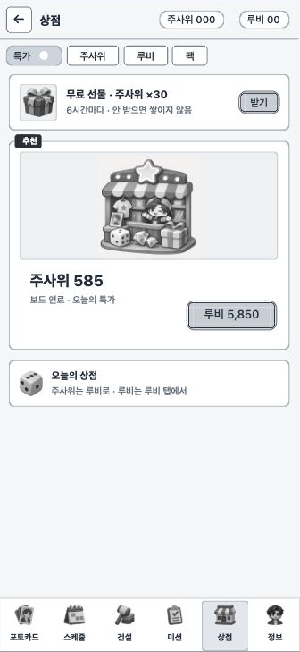
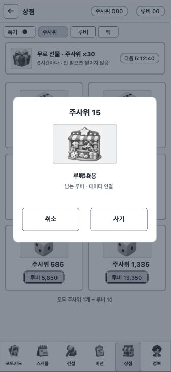
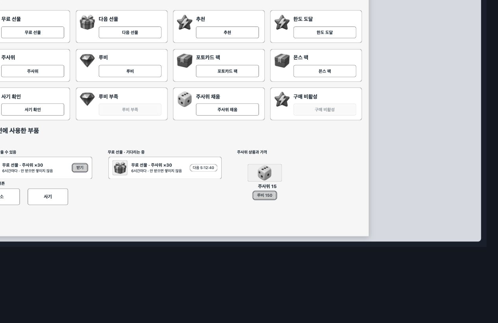

케이팝몬스터즈 · 7018 저장판 r4 · 390 × 844
특가·주사위·루비·팩을 한 상점의 탭으로 전환합니다. 팩·주사위 상품을 고르면 선택한 수량과 루비 가격을 확인합니다.


캔버스에서 각 기능 행의 왼쪽에서 시작해 상세와 상태를 확인합니다.
| 화면·ID | 입력과 목적지 | 표시 기준 |
|---|---|---|
① 특가 (기본 탭)featured |
| 1탭 4개(특가 · 주사위 · 루비 · 팩) · 처음엔 특가 · 꺼진 탭(패스 · 꾸밈)은 안 보임 · 빨간 점 = 무료 선물 받을 수 있음 2무료 선물 · 6시간마다 주사위 30 · 쌓이지 않음 · 받기 → 위 주사위로 날아감 · 받으면 「다음 남은 시간」 3오늘의 특가 · 큰 카드 하나(주사위 585 · 루비 5,850) · 「추천」 표시 · 가격을 누르면 ⑤ 4오늘의 상점 배너 · 안내 한 줄 5첫 구매 보너스 배너 · 첫 구매 두 배가 꺼져 있어 지금은 안 보임(점선 = 켜질 자리) 6아래 「상점」 빨간 점 = 무료 선물이 찼을 때 |
② 주사위 (6칸)dice |
| 1무료 선물은 탭마다 맨 위 · 아직이면 남은 시간만 2주사위 6단(15 · 35 · 75 · 175 · 585 · 1,335) · 2줄 3칸 · 가격 = 루비 · 누르면 ⑤ 3175에 「추천」(표의 best) · 진한 테두리 |
③ 루비 (원화 4칸)ruby |
| 1루비 4단(100 · 550 · 1,200 · 3,000) · 원화 결제 2가격을 누르면 바로 스토어 결제창(확인 창 없음) · 받으면 위 루비로 날아감 3첫 구매 두 배 · 표에 칸은 있지만 꺼짐(보류) |
④ 팩 (묶음 · 몬스 · 아이돌)packs |
| 1주사위 + 팩 묶음 2개 2몬스 팩 · 하루 3번까지(표의 하루 한도 3 · 시험 설정) 3오늘 남은 횟수 · 0이면 가격 대신 「내일 다시」 4아이돌 카드팩 5등급 · 가격은 임시값(현중 11/02) 5팩 아이콘을 누르면 포토카드 「④-1 팩 안 카드」 창 그대로 |
⑤ 사기 확인 (루비로 살 때)purchase-confirm |
| 1루비로 사는 상품(주사위 · 팩)만 확인 창 · 원화(루비 탭)는 스토어 결제창이 대신함 2쓰는 루비 · 남는 루비 3사기 → 보상이 위로 날아감 · 루비가 모자라면 이 창 대신 ⑥ |
⑥ 루비가 모자라요need-ruby |
| 1필요한 루비 · 지금 루비 2루비 탭으로 › → ③ 루비 탭(같은 상점 안에서 탭만 바뀜) |
⑦ 주사위 채움 (보드에서 주사위 0)refill-dice |
| 1주사위 0에서 굴리려고 하면 · 무료 선물 남은 시간(받을 수 있으면 「받기」) 2주사위 탭과 같은 상품 3개만 · 가격 누름 → ⑤ 3상점 더 보기 › → ② 주사위 탭 |
상점 · 공통 부품 보드parts | 공통 실제 부품과 상태를 따로 편집합니다. | 원본의 목록 카드·버튼·상태를 별도 편집 부품으로 비교합니다. |

흑백 아이콘은 이미지 레이어, 글자와 숫자는 시스템 글꼴의 독립 텍스트입니다. 메인 하단은 HUD의 6칸을 재사용합니다. 가변 버튼은 공통 9슬라이스와 기본·초점·눌림·선택·비활성 상태를 씁니다.
숫자와 단위가 원본에 있으면 화면에 직접 표시합니다. 검수 예시, 확정값, 원본 결측은 구분합니다.
확인창은 선택한 상품의 실제 명칭과 원본표에 있는 가격 예시를 표시합니다. 루비 잔액, 결제, 무료 선물 시간, 상점 정산은 데이터 연동 범위입니다. 주사위 채움은 HUD에서 여는 상태 보드입니다.